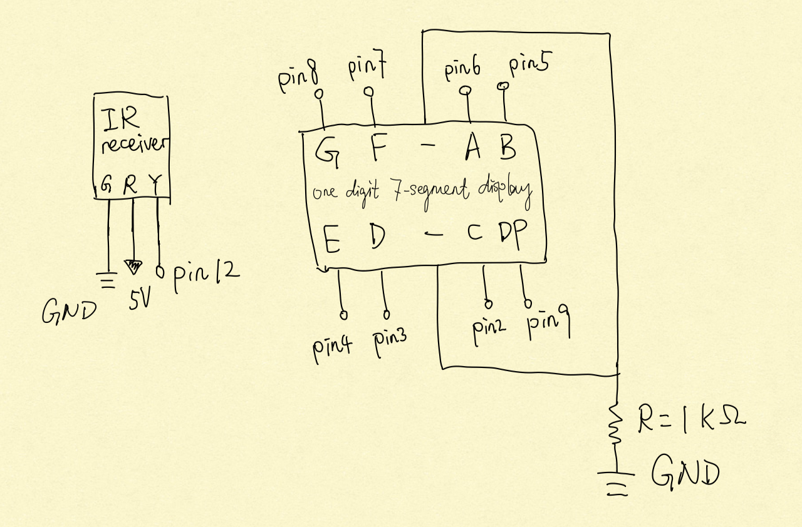

Joseph Zhang's Assignment 4!
The above is the calculation process of choosing resistor. I chose 1kΩ resistors for the display,
so that the current would not be larger than 20mA.

Here are the schematics of the circuit! It will show the people
how they can use remote control to send and display the values.

Here is the HW 4 GIF!
If you want to learn about how I made this by Arduino, please find the code below!